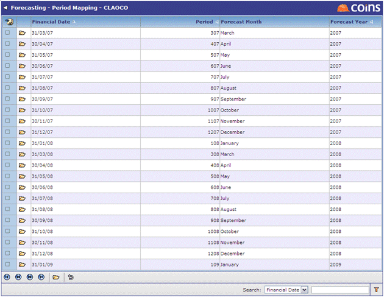

Period Mapping
The and Period are generated automatically from the General Ledger. Against each row enter the Forecast Month and Year as you want them to appear.
Data in is based on months rather than . In order to combine this information with values stored in the financial ledgers, it is necessary to map the months to periods.

Mapping records can be updated by clicking  .
.